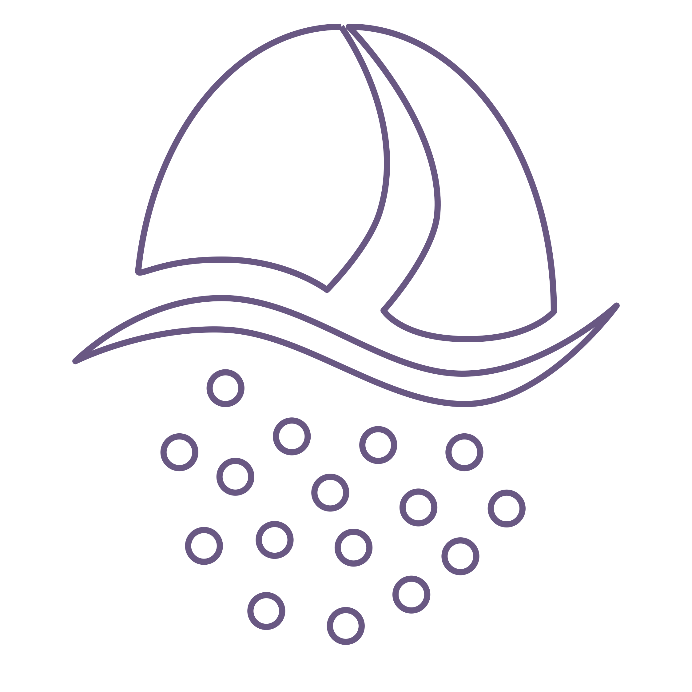

oroma
turkish
benefits
Coffee was founded in Oromo, Africa in 1XXX. It can be found all over the world and in different ways. Coffee was founded in Oromo, Africa in 1XXX. It can be found all over the world and in different ways. Coffee was founded in Oromo, Africa in 1XXX. It can be found all over the world and in different ways.
what you need

turkish coffee pot (cezve/ibrik)

turkish ground coffee (very fine setting)
stovetop
01
Measure the amount of water you wish to use. Typically, use the coffee cup size you would like to drink as a guide and fill your pot with 1 1/2 cup sizes of water. Add the water to your coffee pot.
02
For each cup of coffee, measure out a heaping tablespoon of extra finely ground (Turkish) coffee. If sugar is desired, also measure out the amount of sugar. Add the coffee and sugar in with your water.
03
Taking the coffee pot to the stove, bring the coffee to a boil over medium heat (about 3 minutes).

04
Remove the pot from the stove.
05
Pour half of the coffee into your cup(s), making sure to pour out and serve the dark foam that was built on top of the pot.
06
Return the pot to the stove for an additional 15 seconds or so, until the coffee is boiling again.

07
Remove the pot from the stove, a let is sit undisturbed for a moment for the coffee grounds to settle at the bottom. Then, serve the remaining coffee into your cup(s).
Note: Turkish coffee is not typically enjoyed with any milk or cream, but it is enjoyed with a small sweet treat on the side!